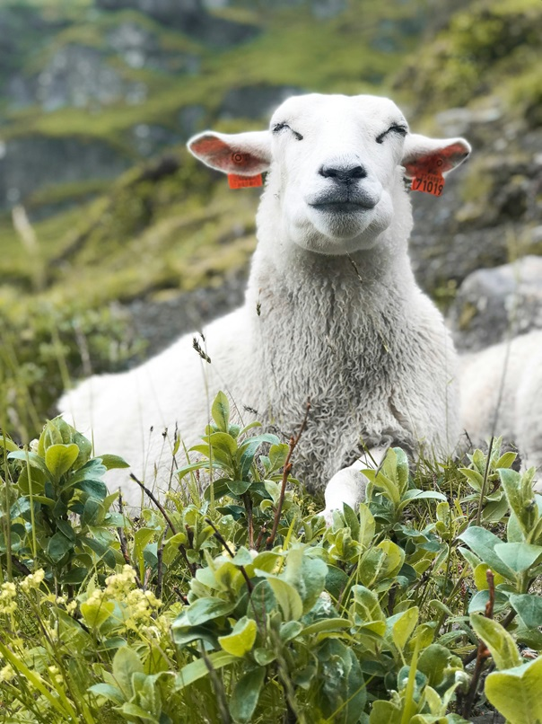

Sheep (pl.: sheep) or domestic sheep (Ovis aries) are a domesticated, ruminant mammal typically kept as livestock. Although the term sheep can apply to other species in the genus Ovis, in everyday usage it almost always refers to domesticated sheep. Like all ruminants, sheep are members of the order Artiodactyla, the even-toed ungulates. Numbering a little over one billion, domestic sheep are also the most numerous species of sheep. An adult female is referred to as a ewe (/juː/ yoo), an intact male as a ram, occasionally a tup, a castrated male as a wether, and a young sheep as a lamb.
Sheep are most likely descended from the wild mouflon of Europe and Asia, with Iran being a geographic envelope of the domestication center.[1] One of the earliest animals to be domesticated for agricultural purposes, sheep are raised for fleeces, meat (lamb, hogget or mutton) and milk. A sheep's wool is the most widely used animal fiber, and is usually harvested by shearing. In Commonwealth countries, ovine meat is called lamb when from younger animals and mutton when from older ones; in the United States, meat from both older and younger animals is usually called lamb. Sheep continue to be important for wool and meat today, and are also occasionally raised for pelts, as dairy animals, or as model organisms for science.
Domestic sheep are relatively small ruminants, usually with a crimped hair called wool and often with horns forming a lateral spiral. They differ from their wild relatives and ancestors in several respects, having become uniquely neotenic as a result of selective breeding by humans.[18][19] A few primitive breeds of sheep retain some of the characteristics of their wild cousins, such as short tails. Depending on breed, domestic sheep may have no horns at all (i.e. polled), or horns in both sexes, or in males only. Most horned breeds have a single pair, but a few breeds may have several.[16]
Tired Lambs

Sheep are most likely descended from the wild mouflon of Europe and Asia, with Iran being a geographic envelope of the domestication center.[1] One of the earliest animals to be domesticated for agricultural purposes, sheep are raised for fleeces, meat (lamb, hogget or mutton) and milk. A sheep's wool is the most widely used animal fiber, and is usually harvested by shearing. In Commonwealth countries, ovine meat is called lamb when from younger animals and mutton when from older ones; in the United States, meat from both older and younger animals is usually called lamb. Sheep continue to be important for wool and meat today, and are also occasionally raised for pelts, as dairy animals, or as model organisms for science.
Sheep husbandry is practised throughout the majority of the inhabited world, and has been fundamental to many civilizations. In the modern era, Australia, New Zealand, the southern and central South American nations, and the British Isles are most closely associated with sheep production.
There is a large lexicon of unique terms for sheep husbandry which vary considerably by region and dialect. Use of the word sheep began in Middle English as a derivation of the Old English word scēap. A group of sheep is called a flock. Many other specific terms for the various life stages of sheep exist, generally related to lambing, shearing, and age.
Sheep husbandry spread quickly in Europe. Excavations show that in about 6000 BC, during the Neolithic period of prehistory, the Castelnovien people, living around Châteauneuf-les-Martigues near present-day Marseille in the south of France, were among the first in Europe to keep domestic sheep.[13] Practically from its inception, ancient Greek civilization relied on sheep as primary livestock, and were even said to name individual animals.[14]